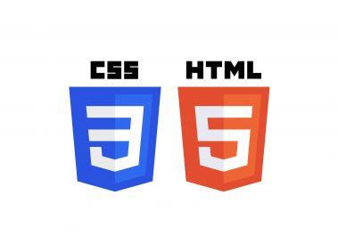

En esta pàgina muestro las competencias profesionales que he aprendido y desarollado en el grado superior Web development.
1. Configurar i explotar sistemes informàtics, adaptant la configuració lògica del sistema segons les necessitats d’ús i els criteris establerts.
En el mòdul 01 he aprés a configurar sistemes informàtics com per exemple instalar sistemes operatius, manejar particions, etc.
2. Gestionar servidors d’aplicacions adaptant la seva configuració en cada cas per permetre el desplegament d’aplicacions web.
En el projecte M12: Doctor AI he gestionat el servidor (backend) per posar en marxa el servidor web per la nostra aplicació
3. Gestionar servidors d’aplicacions adaptant la seva configuració en cada cas per permetre el desplegament d’aplicacions weGestionar servidors d’aplicacions adaptant la seva configuració en cada cas per permetre el desplegament d’aplicacions web.
En el projecte M12: Doctor AI i el modul 07 i 02 he aprés a gestionar el servidor (backend) per posar en marxa el servidor web per la nostra aplicació
4.Desenvolupar interfícies en aplicacions web d’acord amb un manual d’estil, utilitzant llenguatges de marques i estàndards web.
En el projecte M12: Doctor AI i el modul 06 desenvolupat interfícies web amb un manual d'estil com Bootstrap i llenguatges de marques.

5. Resoldre situacions, problemes o contingències amb iniciativa i autonomia en l’àmbit de la seva competència, amb creativitat, innovació i esperit de millora en el treball personal i en el dels membres de l’equip.
Al nostre projecte final Doctor AI resoldre situacions y problemes ha sigut una cosa principal. A més d'una comunicació constant entre nosaltres per organitzar la nostra feina.
6.Organitzar i coordinar equips de treball, supervisar-ne el desenvolupament, amb responsabilitat, mantenint relacions fluïdes i assumint-ne el lideratge, així com aportant solucions als conflictes grupals que es presentin.
Al nostre projecte final Doctor AI hem aprés que es necesaria una responsabilitat. A més d'una comunicació constant entre nosaltres per organitzar la nostra feina.
7. Integrar serveis i continguts distribuïts en aplicacions web, garantint-ne la funcionalitat.
Al modul 06 he apres a implementar serveis per comunicarse amb el servidor amb el framwork de Laravel
8. Comunicar-se amb els seus iguals, superiors, clients i persones sota la seva responsabilitat utilitzant vies eficaces de comunicació, transmetent la informació o coneixements adequats i respectant l’autonomia i la competència de les persones que intervenen en l’àmbit del seu treball.
A les pràctiques FCT he apres a comunicarme amb superiors respectan la responsabilitat i els mitjos de comunicació establerts
9. Completar plans de proves verificant el funcionament dels components programari desenvolupats segons les especificacions.
A les pràctiques FCT he apres a comunicarme amb superiors respectan la responsabilitat i els mitjos de comunicació establerts
10. Elaborar i mantenir la documentació dels processos de desenvolupament utilitzant eines de generació de documentació i control de versions.
Al nostre projecte Doctor AI, hem elaborat mantingut i actualitazt documentació per a les nosaltres eines, tambe utilitzant un control de versions com git amb un repository al núvol